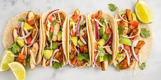

Chicken Tacos Recipe

Description
Great recipe for those who enjoy Mexican food.
This recipe can also be easily customizable where you can add
remove as you like.
Ingredients
- ½ cup ranch dressing
- ¼ cup reduced-fat sour cream
- 1 (1 ounce) packet taco seasoning mix, divided
- 1 tablespoon mild chunky salsa
- 2 cups shredded rotisserie chicken
- Corn tortillas
- Lettuce
- Cheese
Steps
- Combine ranch dressing, sour cream, 1 teaspoon taco seasoning, and salsa in a small bowl. Cover and refrigerate until serving.
- Toss chicken with remaining taco seasoning. Cover bowl loosely with wax paper or plastic wrap. Microwave chicken until chicken is heated through, about 2 to 3 minutes.
- Warm tortillas in a skillet for about a minute on each side to make them pliable. Place a scoop of chicken on the tortilla and top with lettuce, tomato, green onion, olives, avocado, cheese, and a spoonful of the ranch dressing mixture.